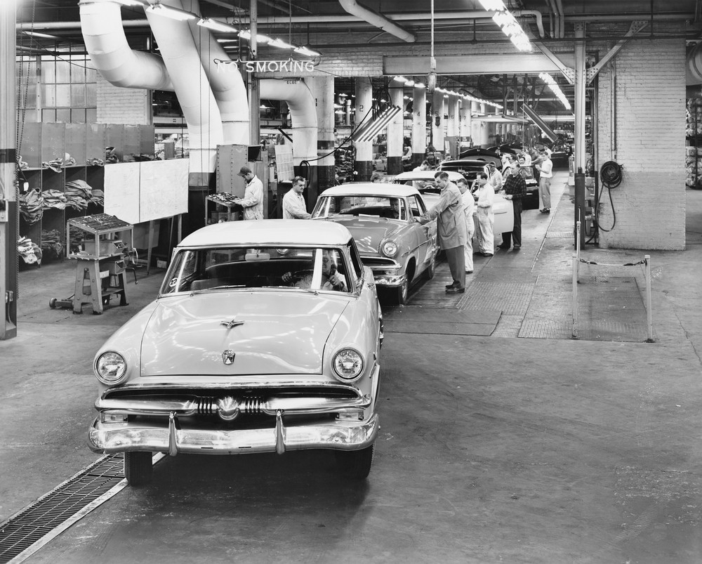
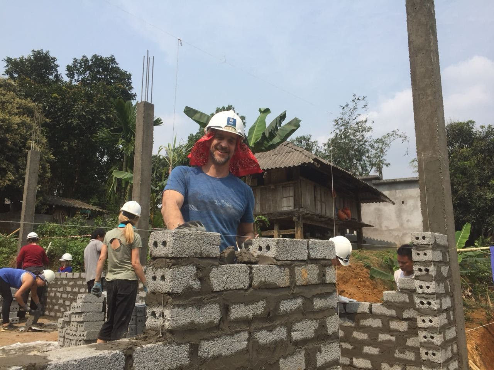

Hi! I'm Tim.
I like to build cool stuff with other people.
Here are the values I bring to the jobsite.

Partnership
Trust is the most important ingredient of any project. As a result, I prioritize partnering with colleagues over all else. Starting with relationships makes work more fun for everyone.

Consensus
The best way to deliver the great results is to focus upfront on getting everyone working on the project to think about the problem we are solving in the same way.

Process
I think about HOW we are working as much as WHAT we are building. From my mechanical engineering background, I bring a sharp focus on operations, design for manufacturability and accountability to my teams.

Craft
Beauty is a technical term. Details are not details. #alwaysbeknolling
Giving Back
TBD

Ethics
TBD